Imatge 1: Vista inicial del projecte
En aquesta primera captura es veu el punt de partida del treball, amb l'estructura bàsica del repositori i la ubicació dels fitxers que s'han d'utilitzar.
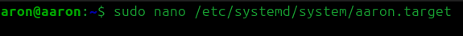
2n ASIX · DOCUMENTACIÓ
En aquesta primera captura es veu el punt de partida del treball, amb l'estructura bàsica del repositori i la ubicació dels fitxers que s'han d'utilitzar.

Es mostra com s'ha revisat el contingut de la carpeta del projecte per identificar els elements necessaris per al desenvolupament i la documentació.
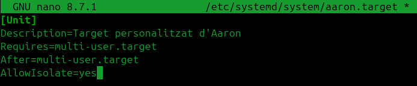
En aquesta imatge es confirma que la carpeta
imatges conté els captures que després
s'incorporaran al document final.
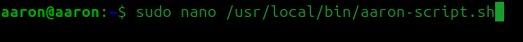
Es visualitza la llista de documents del projecte, cosa que permet tenir una visió general de les parts que formen la tasca.
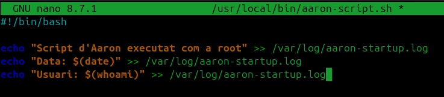
Aquí es localitza el document principal on s'ha d'inserir la documentació i les captures del procés realitzat.
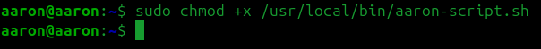
La captura mostra la preparació del fitxer de treball, abans d'inserir les imatges i redactar la explicació corresponent.
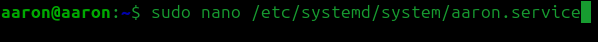
En aquest moment s'està incorporant al document el material gràfic que explica el desenvolupament pas a pas.
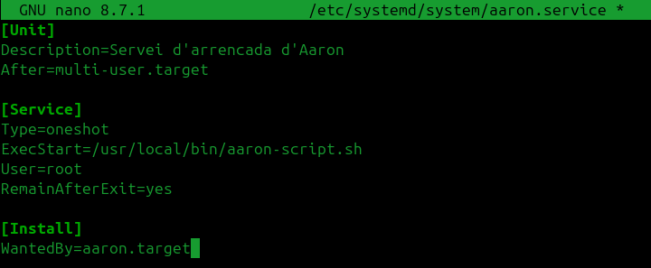
Es veu com la documentació es va ordenant en apartats per facilitar la llegibilitat i la comprensió del treball.
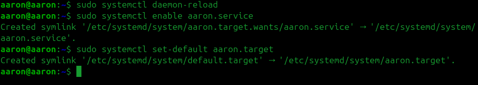
Aquesta imatge mostra la part següent de la feina, on es va completant la informació del projecte amb captures i descripcions.
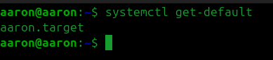
Es reflecteix el seguiment del procés, comprovant que cada pas del treball ja està documentat i organitzat.
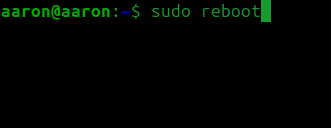
En aquesta captura es revisa que totes les imatges i textos estiguin correctament ubicats dins del document final.
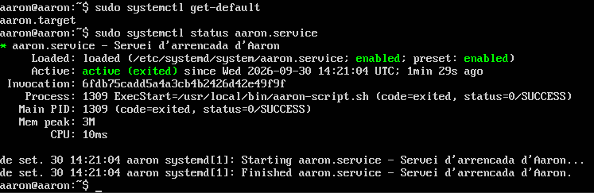
Es comprova que la documentació té el contingut necessari abans de donar-la per acabada.
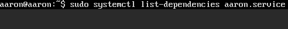
Aquesta imatge mostra un estat avançat del treball, amb la major part del contingut ja incorporat i ordenat.
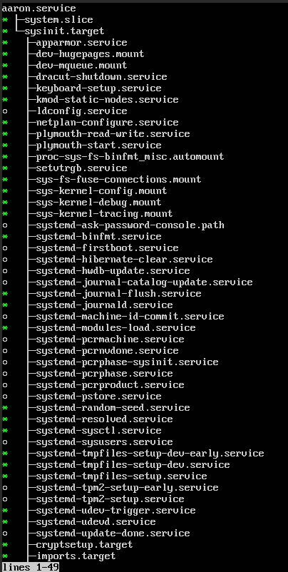
En aquesta última captura es mostra el resultat final del treball i la documentació completada.
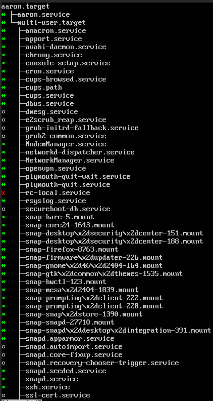